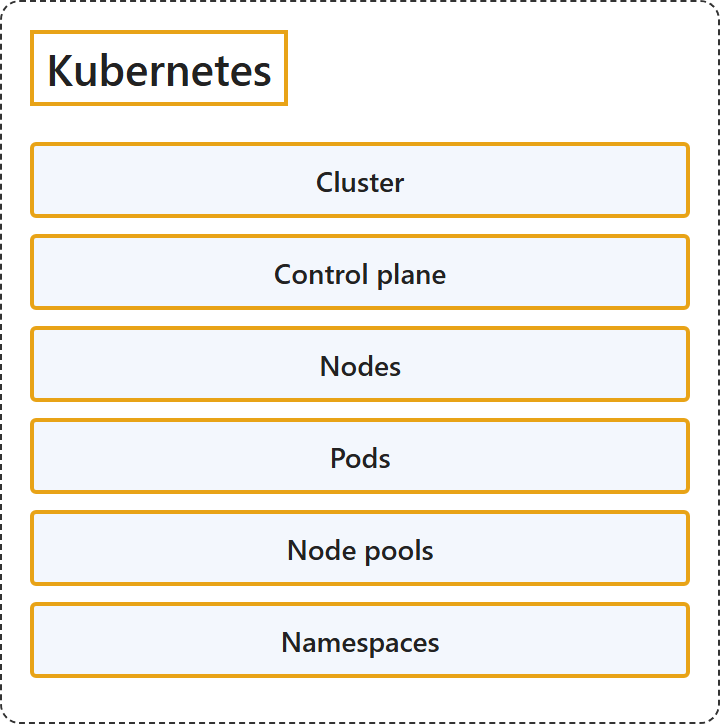

5.2 Kubernetes
Classification

Glossary
| Term | Definition | 中文翻译 | Source |
|---|---|---|---|
| Cluster 群集 |
"A collection of Docker hosts exposed as if it were a single virtual Docker host, so that the application can scale to multiple instances of the services spread across multiple hosts within the cluster." | 一组 Docker 主机，对外表现得就像单个虚拟 Docker 主机，这样应用程序就可以扩展到分布在群集内多个主机上的多个服务实例。 | Microsoft, 2021, "Cluster" entry |
| Control plane 控制平面 |
"The control plane provides the core Kubernetes services and orchestration of application workloads." | 控制平面提供核心 Kubernetes 服务和应用程序工作负载的编排。 | Microsoft, 2026, "Cluster components" section |
| Nodes 节点 |
"Nodes are the underlying virtual machines (VMs) that run your applications." | 节点是运行你的应用程序的底层虚拟机（VM）。 | Microsoft, 2026, "Cluster components" section |
| Pods Pod |
"A pod is a group of one or more containers that share the same network and storage resources and a specification for how to run the containers." | Pod 是一个或多个容器组成的组，这些容器共享相同的网络和存储资源，以及一份如何运行这些容器的规范。 | Microsoft, 2026, "Pods" section |
| Node pools 节点池 |
"In AKS, nodes are grouped together into node pools." | 在 AKS 中，节点被分组到节点池中。 | Microsoft, 2026, "Node pools" section |
| Namespaces 命名空间 |
"Kubernetes resources, such as pods and deployments, are logically grouped into namespaces to divide an AKS cluster and create, view, or manage access to resources." | Kubernetes 资源（例如 Pod 和部署）被按逻辑分组到命名空间中，用来划分 AKS 群集，并创建、查看或管理对资源的访问。 | Microsoft, 2026, "Namespaces" section |
References
- Microsoft. (2021). Docker terminology. .NET Microservices: Architecture for Containerized .NET Applications. Microsoft Learn. https://learn.microsoft.com/en-us/dotnet/architecture/microservices/container-docker-introduction/docker-terminology
- Microsoft. (2026). Core Kubernetes concepts for Azure Kubernetes Service (AKS). Microsoft Learn. https://learn.microsoft.com/en-us/azure/aks/core-aks-concepts